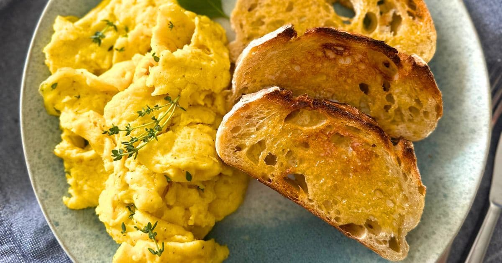

Nathan's Breakfast - Egg Scramble with Sourdough Bread

Description
The breakfast that I make every day involves an egg scramble of ground venison, diced bell peppers and onions,
spinach, two eggs and 2 servigs of egg whites. This is then served with a side of two slices of buttered sourdough!
Ingredients
- Butter
- Ground Venison
- Diced Mixed Bell Peppers
- Baby Spinach
- Vital Farms Eggs
- Egg Whites
- Sourdough Bread
Steps
- Begin by cooking the vensison until almost cooked through
- Add in onion and bell pepper to cook until softening, and then add spinach
- Mix up 2 eggs and 2 servings of egg whites and pour over cooked ingredients
- Cook sourdough, butter and serve!